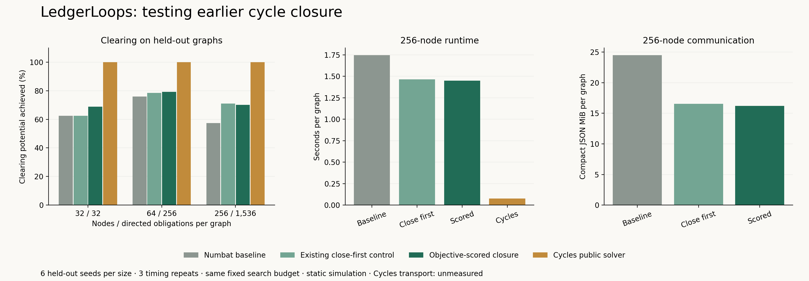

20 October 2026. Research simulation; no app or demo credentials changed.
The candidate closes the best currently visible cycle by estimated aggregate debt reduction. The control enables the existing close-first switch. Both retain local capacity/reservation checks and unchanged settlement.

At least 5% more pooled held-out clearing; at most 25% more messages, JSON bytes and runtime; no family loses more than 5% of baseline clearing; all audits pass. Every fixed method was tested regardless of development scores; no tuning. Seven independent correctness tests pass.
Clearing and traffic summed once per graph; runtime is the mean of per-graph medians of 3 repeats. Development 2 seeds/family; heldout 6 seeds/family. Pooled ratios weight larger graphs more.
| Split | Family | Method | Cleared units | % initial debt | Clearing potential achieved (%) | Seconds/graph | Messages/graph | JSON MiB/graph |
|---|---|---|---|---|---|---|---|---|
| development | ring32 | Numbat baseline | 0 | 0.00% | 0.00% | 0.1655 | 5,244 | 3.20 |
| development | ring32 | Existing close-first control | 0 | 0.00% | 0.00% | 0.1833 | 5,244 | 3.20 |
| development | ring32 | Objective-scored closure | 0 | 0.00% | 0.00% | 0.1649 | 5,179 | 3.13 |
| development | ring32 | Cycles public solver | 416 | 12.38% | 100.00% | 0.0028 | N/A | N/A |
| development | sparse64 | Numbat baseline | 11864 | 45.69% | 78.87% | 0.2738 | 8,768 | 3.63 |
| development | sparse64 | Existing close-first control | 11422 | 43.99% | 75.93% | 0.2507 | 7,980 | 3.03 |
| development | sparse64 | Objective-scored closure | 11813 | 45.50% | 78.53% | 0.2733 | 8,209 | 3.21 |
| development | sparse64 | Cycles public solver | 15042 | 57.93% | 100.00% | 0.0088 | N/A | N/A |
| development | medium256 | Numbat baseline | 65136 | 41.70% | 61.23% | 1.6193 | 42,181 | 23.85 |
| development | medium256 | Existing close-first control | 75946 | 48.62% | 71.39% | 1.4559 | 37,689 | 16.59 |
| development | medium256 | Objective-scored closure | 75831 | 48.55% | 71.28% | 1.5996 | 38,726 | 17.36 |
| development | medium256 | Cycles public solver | 106382 | 68.11% | 100.00% | 0.0703 | N/A | N/A |
| heldout | ring32 | Numbat baseline | 320 | 3.45% | 62.50% | 0.1671 | 5,018 | 2.98 |
| heldout | ring32 | Existing close-first control | 320 | 3.45% | 62.50% | 0.1636 | 5,018 | 2.98 |
| heldout | ring32 | Objective-scored closure | 352 | 3.79% | 68.75% | 0.1699 | 4,846 | 2.82 |
| heldout | ring32 | Cycles public solver | 512 | 5.52% | 100.00% | 0.0030 | N/A | N/A |
| heldout | sparse64 | Numbat baseline | 34557 | 44.42% | 75.86% | 0.2945 | 8,507 | 3.58 |
| heldout | sparse64 | Existing close-first control | 35708 | 45.90% | 78.39% | 0.2701 | 8,100 | 3.11 |
| heldout | sparse64 | Objective-scored closure | 36099 | 46.41% | 79.25% | 0.2728 | 8,065 | 3.10 |
| heldout | sparse64 | Cycles public solver | 45552 | 58.56% | 100.00% | 0.0117 | N/A | N/A |
| heldout | medium256 | Numbat baseline | 180884 | 39.20% | 57.44% | 1.7452 | 42,473 | 24.47 |
| heldout | medium256 | Existing close-first control | 223371 | 48.41% | 70.93% | 1.4647 | 37,414 | 16.52 |
| heldout | medium256 | Objective-scored closure | 220848 | 47.86% | 70.13% | 1.4483 | 36,909 | 16.21 |
| heldout | medium256 | Cycles public solver | 314901 | 68.24% | 100.00% | 0.0757 | N/A | N/A |
Clearing potential is the maximum sum of original-edge debt reductions achievable without adding money or credit, while preserving every net position. Net internal debt (sum of positive net positions) is preserved by cancellation. Endogenous debt is not a verified Cycles synonym for the cancellable portion. Cycles' public solver reaches the certified maximum for these graphs. This is not 100% of all debt or of NID. See Cycles' cyclic structure explanation.
Independent validation: 216 local timing runs checked, 72 unique method/graph ledgers replayed, and 24 oracle optima certified by a separately written Bellman–Ford audit. See independent audit results. Close-first improves 11 of 18 held-out graphs, ties 6 and loses 1; objective scoring improves 13, ties 3 and loses 2. Family promotion guards are aggregate, not per-graph guarantees.
LedgerLoops base 1e0e87d4859e470d87b430b488c64db3c08df6ae plus candidate SHA256 9bbc25aefb37d39eb5a3f5b7356122355f192fb661c51cb8a1c2e19a66cdc175. Cycles public notebook 32dc873c45041accb365e73a8ef35bee10a80f1d; Python 3.12.14; NetworkX 3.5. Source, input and plan hashes are in comparison.json.
Same 500-tick horizon, 250,000-message soft admission cutoff plus drain, maximum path 100, search budget 256, delays 1–5, retry 50. Runtime includes fresh engine/graph construction and clearing, excludes parsing and audits. No Internet latency measurement. All original edge bounds and node net positions were audited; every Cycles output has a negative-cycle optimality certificate.
CSV · Raw results · Reproduce